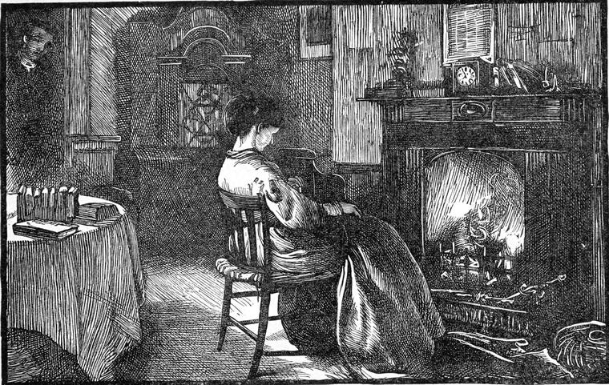

When Lucy came home the night before, she found her grandmother sitting by the fire, gazing reproachfully at the coals. The poor woman had not yet reconciled herself to her altered position. Widdles was in vain attempting to attract her attention; but, not being gifted with speech like his gray brother in the next cage to his—whose morals, by the way, were considerably reformed, thanks to his master's judicious treatment of him—he had but few modes of bringing his wishes to bear at a distance. He could only rattle his beak on the bars of his cage, and give a rending shriek.
The immediate occasion of her present mood was Thomas's note, which was over her head on the mantel-piece. Notes had occasionally passed between him and Lucy, and she knew the handwriting. She regarded him with the same feelings with which she regarded his father, but she knew that Lucy did not share in these feelings. And forgetting that she was now under Lucy's protection, she was actually vowing with herself at the moment Lucy entered that if she had one word of other than repudiation to say to Thomas, she would turn her out of the house. She was not going to encourage such lack of principle. She gave her no greeting, therefore, when she entered; but Lucy, whose quick eye caught sight of the note at once, did not miss it. She took the note with a trembling hand, and hurried from the room. Then Mrs. Boxall burst into a blaze.
"Where are you off to now, you minx?" she said.
"I am going to put my bonnet off, grannie," answered Lucy, understanding well enough, and waiting no farther parley.
She could hardly open the note, which was fastened with a wafer, her hands trembled so much. Before she had read it through she fell on her knees, and thus, like Hezekiah, "spread it before the Lord," and finished it so.
And now, indeed, was her captivity turned. She had nothing to say but. "Thank God!" she had nothing to do but weep. True, she was a little troubled that she could not reply: but when she made inquiry about the messenger, to see if she could learn anything of where Tom was to be found, Mr. Kitely, who, I have said, returned home immediately after Mr. Fuller dismissed him (though in his anxiety he went back and loitered about the church door), told her that young Worboise was at that moment with Mr. Fuller in his vestry. He did not tell her how he came to be there. Nothing, therefore, remained for her but to be patient, and wait for what would come next. And the next thing was a note from Mr. Fuller, telling her that Thomas was at his house, bidding her be of good cheer, and saying that she should hear from him again to-morrow. She did not sleep much that night.
But she had a good deal to bear from her grandmother before she reached the haven of bed. First of all, she insisted on knowing what the young villain had written to her about. How dared he?—and so on. Lucy tried to pacify her, and said she would tell her about it afterward. Then she broke out upon herself, saying she knew it was nothing to Lucy what became of her. No doubt she would be glad enough to make her own terms, marry her grandmother's money, and turn her out of doors. But if she dared to say one word to the rascal after the way he had behaved to her, one house should not hold them both, and that she told her. But it is ungracious work recording the spiteful utterances of an ill-used woman. They did not go very deep into Lucy, for she knew her grandmother by this time. Also her hope for herself was large enough to include her grandmother.
And soon as Thomas left him in the morning, Mr. Fuller wrote again—only to say that he would call upon her in the evening. He did not think it necessary to ask her to be at home; nor did he tell her anything of Tom's story. He thought it best to leave that to himself. Lucy was strongly tempted to send excuses to her pupils that morning and remain at home, in case Thomas might come. But she concluded that she ought to do her work, and leave possibilities where alone they were determined. So she went and gave her lessons with as much care as usual, and more energy.
When she got home she found that Mr. Fuller had been there, but had left a message that he would call again. He was so delighted with the result of his efforts with Tom, that he could not wait till the evening. Still, he had no intention of taking the office of a mediator between them. That, he felt, would be to intrude for the sake of making himself of importance; and he had learned that one of the virtues of holy and true service is to get out of the way as soon as possible.
About six o'clock he went again, and was shown into the bookseller's back parlor, where he found both Lucy and her grandmother.
"Will you come out with me, Miss Burton, for an hour or so?" he said.
"I wonder at you, Mr. Fuller," interposed Mrs. Boxall—"a clergyman, too!"
It is a great pity that people should so little restrain themselves when they are most capable of doing so, that when they are old, excitement should make them act like the fools that they are not.
Mr. Fuller was considerably astonished, but did not lose his self-possession.
"Surely you are not afraid to trust her with me, Mrs. Boxall?" he said, half merrily.
"I don't know that, sir. I hear of very strange goings-on at your church. Service every day, the church always open, and all that! As if folks had nothing to do but say their prayers."
"I don't think you would talk like that, Mrs. Boxall," said Mr. Fuller, with no less point that he said it pleasantly, "if you had been saying your prayers lately."
"You have nothing to do with my prayers, sir."
"Nor you with my church, Mrs. Boxall. But come—don't let us quarrel, I don't wonder at your being put out sometimes, I'm sure; you've had so much to vex you. But it hasn't been Lucy's fault; and I'm sure I would gladly give you your rights if I could."
"I don't doubt it, sir," said the old lady, mollified. "Don't be long, Lucy. And don't let that young limb of Satan talk you over. Mind what I say to you."
Not knowing how to answer, without offending her grandmother, Lucy only made haste to get her bonnet and cloak. Mr. Fuller took her straight to his own house. The grimy, unlovely streets were, to Lucy's enlightened eyes, full of a strange, beautiful mystery, as she walked along leaning on her friend's arm. She asked him no questions, content to be led toward what was awaiting her. It was a dark and cloudy night, but a cool west wind, that to her feelings was full of spring, came down Bagot Street, blowing away the winter and all its miseries. A new time of hope was at hand. Away with it went all thought of Thomas's past behavior. He was repentant. The prodigal had turned to go home, and she would walk with him and help his homeward steps. She loved him, and would love him more than ever. If there was more joy in heaven over one such than over ninety-and-nine who were not such, why not more joy in her soul? Her heart beat so violently as she crossed Mr. Fuller's threshold, that she could hardly breathe. He took her into the sitting-room, where a most friendly fire was blazing, and left her.
Still she had asked no questions. She knew that she was going to see Thomas. Whether he was in the house or not, she did not know. She hardly cared. She could sit there, she thought, for years waiting for him; but every ring of the door-bell made her start and tremble. There were so many rings that her heart had hardly time to quiet itself a little from one before another set it beating again worse than ever. At length there came a longer pause, and she fell into a dreamy study of the fire. The door opened at length, and she thought it was Mr. Fuller, and, not wishing to show any disquietude, sat still. A moment more, and Thomas was kneeling at her feet. He had good cause to kneel. He did not offer to touch her. He only said, in a choked voice, "Lucy," and bowed his head before her. She put her hands on the bowed head before her, drew it softly on her knees, gave one long, gentle, but irrepressible wail like a child, and burst into a quiet passion of tears. Thomas drew his head from her hands, sank on the floor, and lay sobbing, and kissing her feet. She could not move to make him cease. But when she recovered herself a little, after a measureless time to both of them, she stopped, put her hands round upon his face, and drew him upward. He rose, but only to his knees.

"Lucy, Lucy," he sobbed, "will you forgive me?"
He could not say more yet. She bent forward and kissed his forehead.
"I have been very wicked. I will tell you all about it—everything."
"No, no, Thomas. Only love me."
"I love you—oh! I love you with all my heart and soul. I don't deserve to be allowed to love one of your hands; but if you will only let me love you I will be your slave forever. I don't even ask you to love me one little bit. If you will only let me love you!"
"Thomas," said Lucy, slowly, and struggling with her sobs, "my heart is so full of love and gladness that it is like to break. I can't speak."
By degrees they grew calmer, but Thomas could not rest till she knew all.
"Lucy," he said, "I can't be sure that all you give me is really mine till I've told you everything. Perhaps you won't love me—not so much—when you know all. So I must tell you."
"I don't care what it is, Thomas, for I am sure you won't again."
"I will not," said Thomas, solemnly. "But please, Lucy darling, listen to me—for my sake, not for your own, for it will hurt you so."
"If it will make you easier, Thomas, tell me everything."
"I will—I will. I will hide nothing."
And Thomas did tell her everything. But Lucy cried so much, that when he came to the part describing his adventures in London after he took the money, he felt greatly tempted, and yielded to the temptation, to try to give her the comical side as well. And at the very first hint of fun in the description he gave of Jim Salter, Lucy burst into such a fit of laughter, that Thomas was quite frightened, for it seemed as if she would never stop. So that between the laughing and crying Thomas felt like Christian between the quagmire and the pitfalls, and was afraid to say anything. But at length the story was told; and how Lucy did, besides laughing and crying, at every new turn of the story—to show my reader my confidence in him I leave all that to his imagination, assuring him only that it was all right between them. My women readers will not require even this amount of information, for they have the gift of understanding without being told.
When he came to the point of his father offering to provide for them if he would give up Lucy, he hesitated, and said:
"Ought I to have done it, Lucy, for your sake?"
"For my sake, Tom! If you had said for granny's—But I know her well enough to be absolutely certain that she would starve rather than accept a penny from him, except as her right. Besides, I can make more money in a year than he would give her, I am pretty sure. So if you will keep me, Tom, I will keep her."
Here Lucy discovered that she had said something very improper, and hid her face in her hands. But a knock came at the door, and then both felt so shy that neither dared to say, Come in. Therefore Mr. Fuller put his head in without being told, and said:
"Have you two young people made it up yet?"
"Have we, Tom?" said Lucy.
"I don't know," said Tom. "What was it, sir?"
Mr. Fuller laughed heartily, came near, put a hand on the head of each, and said:
"God bless you. I too am glad at my very heart. Now you must come to supper."
But at supper, which the good man had actually cleared his table to have in the study that he might not disturb them so soon, Thomas had a good many questions to ask. And he kept on asking, for he wanted to understand the state of the case between Mrs. Boxall and his father. All at once, at one reply, he jumped from his seat, looking very strange.
"I must be off, Lucy. You won't hear from me for a day or two. Good-bye, Mr. Fuller. I haven't time for a word," he said, pulling out his watch. "Something may be done yet. It may all come to nothing. Don't ask me any questions, I may save months."
He rushed from the room, and left Mr. Fuller and Lucy staring at each other. Mr. Fuller started up a moment after and ran to the door, but only to hear the outer door bang, and Thomas shout—"Cab ahoy!" in the street. So there was nothing for it but to take Lucy home again. He left her at Mr Kitely's door.
"Well, miss, what have you been about?" said her grandmother.
"Having a long talk with Thomas, grannie," answered Lucy.
"You have!" exclaimed Mrs. Boxall, who had expected nothing else, rising slowly from her seat with the air of one about to pronounce a solemn malediction.
"Yes, grannie; but he knew nothing till this very night of the way his father has behaved to us."
"He made you believe that, did he?"
"Yes, grannie."
"Then you're a fool. He didn't know, did he? Then you'll never see him again. He comes of a breed bad enough to believe anything of. You give him up or I give you up."
"No, I won't, grannie," said Lucy, smiling in her face.
"You or I leave this house, then."
"I won't, grannie."
"Then I will."
"Very well, grannie," answered Lucy, putting her arms round her, and kissing her. "Shall I fetch your bonnet?"
Grannie vouchsafed no reply, but took her candle and went—up to bed.